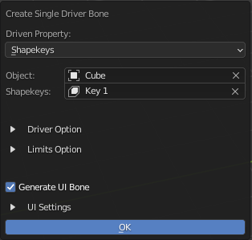
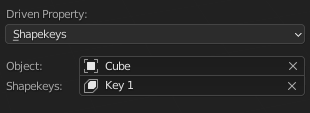
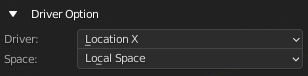
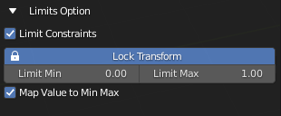

Add Single Driver Bone
Edit Armature |
This Operator Creates A Bone Driving a Property
Driven Options
Driven Property: Types of Driven Property
- Type of Property
- Custom Properties
- Object
Custom Property of an Object
- Data
Custom Property of an Data of the Object (Mesh Data / Armature Data / Curve Data)
- Pose Bone (Armature Object)
Custom Property of a Pose Bone
- Shapekeys (Mesh Object)
Shapekey to be driven by the Driver Bone
Object: Object with the property to be driven
Properties: The Property to be Driven
Driver Options
Driver: Property of the bone that drives the Driven Property
Space: The Space the Driver is using
Limit Options
Limit Constraints: Add Limit Constraint to the Driver Bone
Lock Transform: Lock the relevant Transform channel
Limit Min: Set the Minimum limit for the constraints
Limit Max: Set the Maximum limit for the constraints
Map Value to Min Max: Map the Value of the driven property from 0 - 1 to Minimum Limit and Maximum Limit
UI Settings
Info
Only Work if Driver setting is set to Location X
- Generate UI Bone:
Generate the UI Bone with bone shape Including a Label Bone, Slider Bar Bone, and Add A Slider Bone Shape to Driver Bone
- Label Bone:
Generate the Label Bone with it’s bone shape text object
Label Offset: Offset Amount of Label Bone From Slider Bone
- Slider Bar:
Generate Slider Bar with Bone Shape
Slider Bar Thickness: Thickness of Slider Bar
Slider Shape: Generate Slider Bone Shape for Driver Bone
Info
Driver Bone, Label Name Bone and Slider Bone will be generated with this. The Label will use the Property Name as Label, You can Edit the Bone Shape Label as a text object